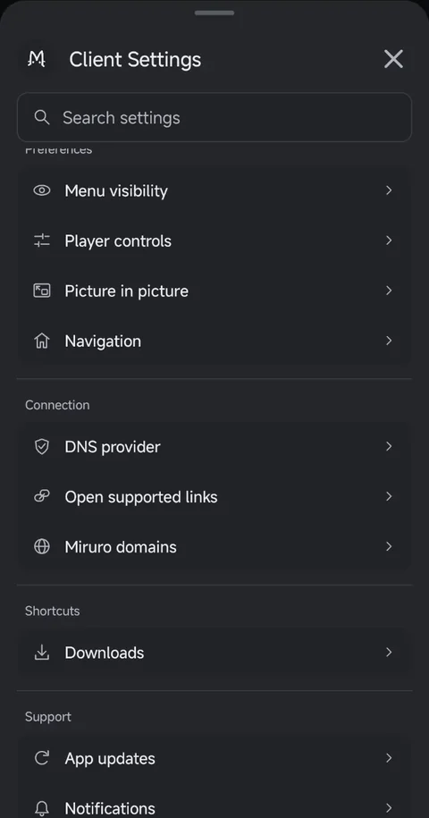
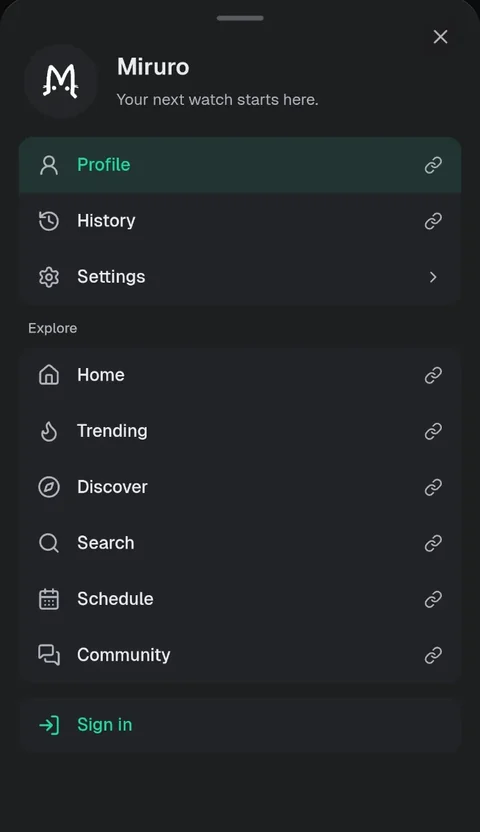

01 / PLAYER
Stay in the episode
Adjust brightness in fullscreen, lock touch and rotation, or switch to a small picture-in-picture window. If playback gets stuck after reconnecting, tap Retry on the player.
UNOFFICIAL COMPANION APP
The Miruro website in a dedicated Android app. Watch fullscreen, switch to picture-in-picture, and manage downloads and connection settings in one place.
01 / APP SCREENCLIENT SETTINGS

02 / FEATURES
01 / PLAYER
Adjust brightness in fullscreen, lock touch and rotation, or switch to a small picture-in-picture window. If playback gets stuck after reconnecting, tap Retry on the player.
02 / DOWNLOADS
Queue supported episode downloads, check progress, and open completed files in a compatible player. Some streaming sources can’t be downloaded.
03 / SETTINGS
Search Client Settings, choose AdGuard, Cloudflare, or System DNS, and read release notes before installing an update. AniList sign-in uses the website’s own flow.
03 / GET STARTED
Open the latest phone release and select the Miruro-…apk file under Assets.
Follow Android’s installation prompt. If Miruro is already installed, install over it to keep your settings and sign-in.
Open the Miruro menu inside the app. Check for future updates under Client Settings → Support → App updates.
